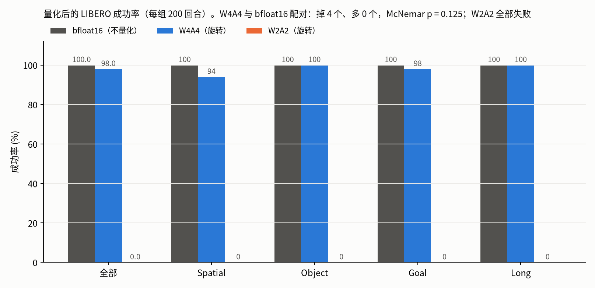
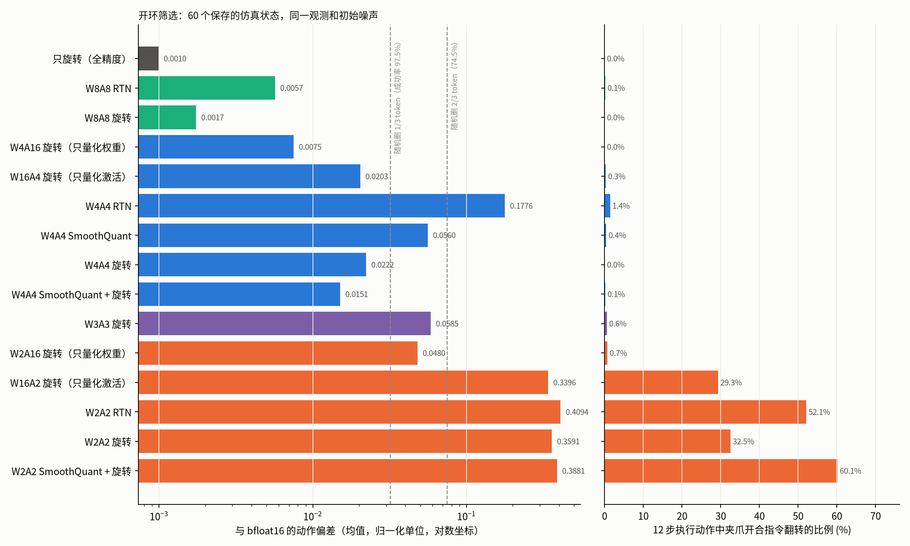
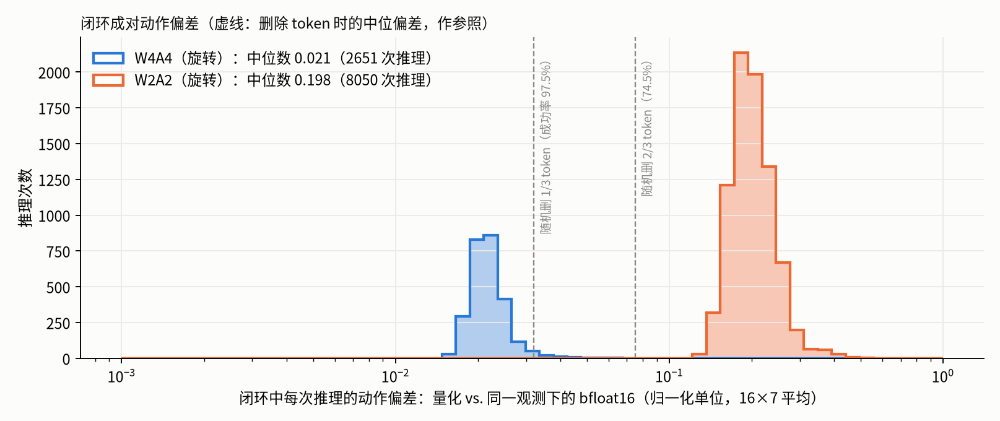
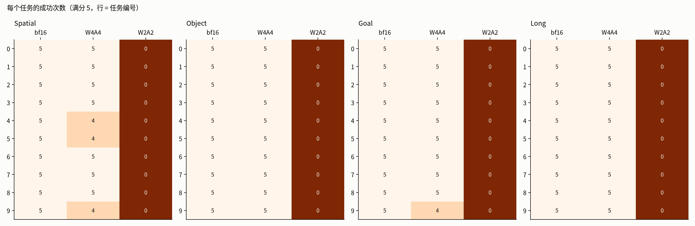

LIBERO：ImageWAM-FLUX.2-4B 的极限量化（模拟量化，OSMesa 渲染，每组 200 回合）
- 量化范围：两个专家 transformer block 内的 140 个线性层（4.31 B 权重）；嵌入、调制、输出层、注意力矩阵乘、VAE、文本编码器保持 bfloat16。
- 旋转：每个线性层输入乘块对角随机 Hadamard（1024 一块），权重乘同一矩阵；权重按输出通道对称量化（逐行搜索截断比例），激活按 token 动态对称量化。

W4A4（旋转）98.0%，与 bfloat16 无显著差异；W2A2 全部失败。

W4A4 的误差主要来自激活（W16A4 0.020 vs. W4A16 0.0075）；旋转把 W4A4 从 RTN 的 0.18 降到 0.022。2 bit 激活单独就使夹爪指令翻转约 29%，2 bit 权重单独只有 0.048。

闭环中 W4A4 的偏差比随机删 1/3 token 还小；W2A2 的偏差大于删 2/3 token。

W4A4 只在 Spatial 的 3 个任务和 Goal 的 1 个任务上各失败 1 次。